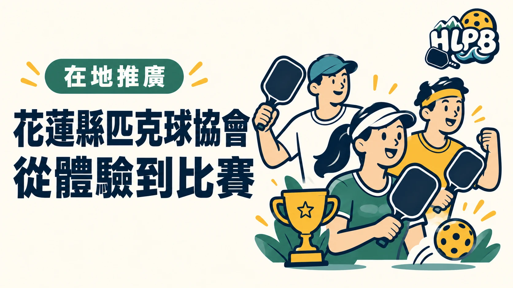

一項運動要在地方持續發展，需要的不只是球場，也需要有人安排活動、串起球友，讓剛開始的人與已經熟悉的選手，都能找到參與的機會。
花蓮縣匹克球協會透過在地活動與賽事，讓花蓮球友有交流、練習及參賽的入口，也讓更多民眾認識匹克球。
用在地賽事，讓球友有交流的舞台
公開賽事資料列有花蓮縣匹克球協會參與承辦的奇萊盃。吉安鄉公所的報導也記錄了協會與地方共同推廣匹克球，並邀請跨縣市球友參與交流。這些活動讓在地球友有機會接觸不同對手，也讓花蓮的匹克球連結逐步擴大。
比賽提供的不只是名次。參加者能實際認識報分、輪轉、場上判定與合作方式，將平時練習帶進正式的對戰情境。
讓想打球的人，有地方詢問
對花蓮的新手而言，常見的困難是找不到適合自己的場次。HLPB 的「揪打球」頁將協會官方 LINE 放在主要入口，方便球友詢問場次與報名方式。
場地、程度、費用及名額仍須依協會當次公告確認。加入聯絡入口，也不代表已完成報名，更不代表所有學校場地都能自由前往。
地方推廣，靠的是持續協調
吉安鄉公所報導提到協會理事長長年投入匹克球推廣。從辦理賽事到串起不同地方的球友，持續有人協調與投入，才能讓活動逐漸形成穩定的參與機會。
這些工作讓花蓮匹克球不只是少數人的興趣，也更容易被社區與民眾看見。
HLPB 協助把入口整理清楚
協會持續推動活動，HLPB 則協助整理可確認的公開資訊與聯絡入口，讓球友更容易查詢。
兩者各有角色：實際場次與報名由活動單位安排，網站負責把資訊呈現清楚。希望想接觸匹克球的人，能少一點摸索，多一點真正參與的機會。
資料來源與聯絡入口
資料來源：花蓮縣匹克球協會 Facebook、奇萊盃公開賽事資料、吉安鄉公所報導
返回文章列表